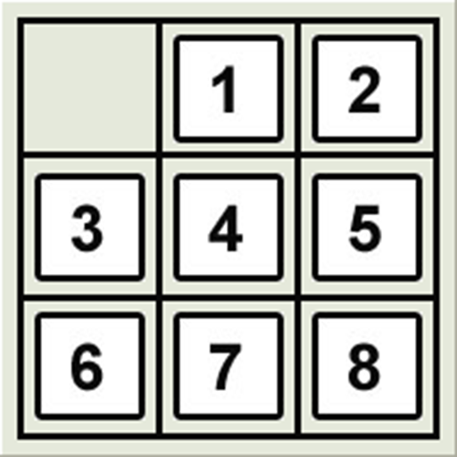

Algoritmos de búsqueda:
En el campo de la inteligencia artificial, un algoritmo de búsqueda nos ayuda a encontrar
un elemento o dato dentro de un árbol (no necesariamente binario).
Existen dos tipos de búsqueda: La búsqueda informada y la no informada. la búsqueda no
informada se divide en dos: Búsqueda en profundidad limitada y búsqueda en profundidad
iterativa.
La búsqueda en profundidad limitada es aquella en la que se completa el arbol
hasta cierta profundidad y no busca una ruta para el dato que se está buscando, no es un
algoritmo óptimo y su complejidad en el peor caso es del orden O(|V|+|E|), donde
V es el número de vértices y E es el número de lados en el grafo no explorado.
La búsqueda en profundidad iterativa es muy parecida a la búsqueda en profundidad
limitada, la diferencia es que tambien hace busqueda de anchura y por ende la hace un poco
más rápida. Su complejidad está en el órden de O(bm), siendo b el
número promedio de ramificaciones por nodo y m la máxima profundidad del espacio de estados.
Finalmente la búsqueda informada está la búsqueda A*, esta es mucho más rápida que la
búsqueda en profundidad limitada y la función de búsqueda está conformada por una
función heurística y otra función g.
¿Quieres conocer más acerca de los algoritmos de búsqueda?
Juego de 8-puzzle:
El 8-puzzle consiste en un área dividida en una cuadrícula 3 por 3.
En cada cuadrícula hay un mosaico y hay un cuadrado que permanece vacío.
Por lo tanto, hay ocho fichas en el 8 rompecabezas las cuales se pueden mover por
medio del espacio vacío, dejando su posición anterior vacía a su vez.
Los algoritmos de búsqueda son aplicables para resolver este problema, dejaré
un codigo hecho en java donde se hace búsqueda en profundidad limitada y Búsqueda A*
